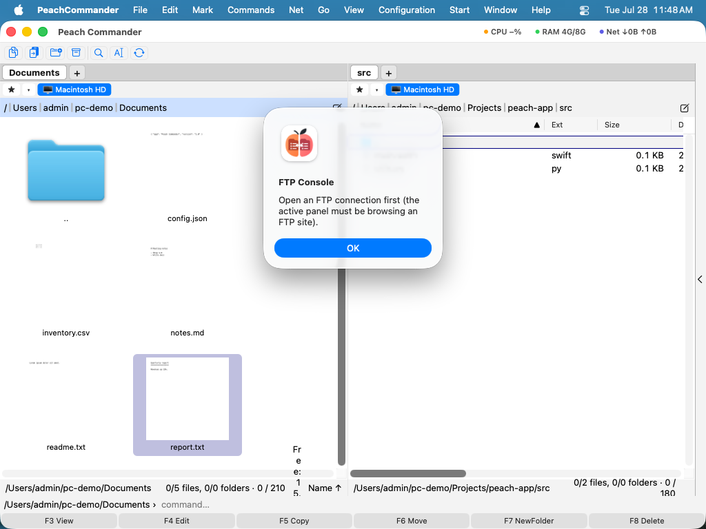

Підключення до FTP та SFTP
Peach Commander може переглядати віддалені сервери так, ніби це звичайні теки. Після підключення одна панель показує віддалені файли, а ви копіюєте, переміщаєте, перейменовуєте та видаляєте їх тими самими клавішами, що й локально. Він говорить звичайним FTP, безпечним FTPS і SFTP/SCP через SSH, тож ви можете дістатися до будь-чого, від класичного вебхостингу до посиленого сервера SSH. Збережені підключення живуть у менеджері підключень, а паролі надійно зберігаються у в'язці ключів macOS, а не в самому підключенні.
Підключення до сервера
- Відкрийте меню Мережа та виберіть Підключення FTP… (Ctrl+F), щоб відкрити менеджер підключень.
- Виберіть збережене підключення зі списку та натисніть Підключити, або натисніть Нове, щоб створити одне. Використовуйте теки в списку, щоб групувати підключення.
- Для швидкого одноразового підключення виберіть Мережа > Нове підключення FTP… (Ctrl+N) і введіть адресу напряму.
- Введіть пароль, коли вас запитають; позначте параметр його збереження, і він потрапить до вашої в'язки ключів на наступний раз.
- Коли закінчите, виберіть Мережа > Відключити FTP (Ctrl+Shift+F).
 (Малюнок: менеджер підключень містить ваші збережені сервери; використовуйте Нове, Редагувати та Видалити, щоб керувати ними.)
(Малюнок: менеджер підключень містить ваші збережені сервери; використовуйте Нове, Редагувати та Видалити, щоб керувати ними.)
Налаштовуючи підключення, ви можете вибрати протокол (FTP, FTPS з явним AUTH TLS, неявний FTPS на порту 990, або SFTP/SCP), пасивний чи активний режим, віддалену та локальну початкову теку, кодування тексту та необов'язковий інтервал keep-alive, щоб не давати неактивним серверам вас відключати. Для SFTP ви можете автентифікуватися своїм агентом SSH, паролем чи файлом приватного ключа, і для передавань можете вибрати SCP. Невідомі ключі хостів SSH вважаються довіреними при першому використанні; якщо ключ відомого сервера колись зміниться, підключення відхиляється, щоб захистити вас від втручання.
Консоль FTP
Щоб побачити точно, що каже сервер, відкрийте консоль FTP з меню Мережа. Вона показує живий журнал каналу керування (ваш пароль замаскований) і дозволяє вводити серверу сирі команди FTP.

(Малюнок: консоль FTP реєструє кожен обмін і приймає сирі команди, що зручно для усунення несправностей.)Скорочення
| Дія | Скорочення |
|---|---|
| Відкрити менеджер підключень | Ctrl+F |
| Нове підключення | Ctrl+N |
| Відключити | Ctrl+Shift+F |
| Змінити режим передавання | Ctrl+Shift+M |
Примітки
- Перервані завантаження та вивантаження можуть відновитися з місця, де зупинилися, замість починати спочатку.
- Для серверів FTPS із самопідписаним сертифікатом увімкніть параметр приймати ненадійний сертифікат у налаштуваннях того підключення.
- Проксі SOCKS5 можна встановити для кожного підключення для звичайного FTP. Спрямування зашифрованого підключення FTPS через проксі не підтримується.
- Наявні підключення FTP з Total Commander можна імпортувати.
- SCP використовується лише для передавання файлів; перелічення, перейменування та видалення завжди йдуть через SFTP.